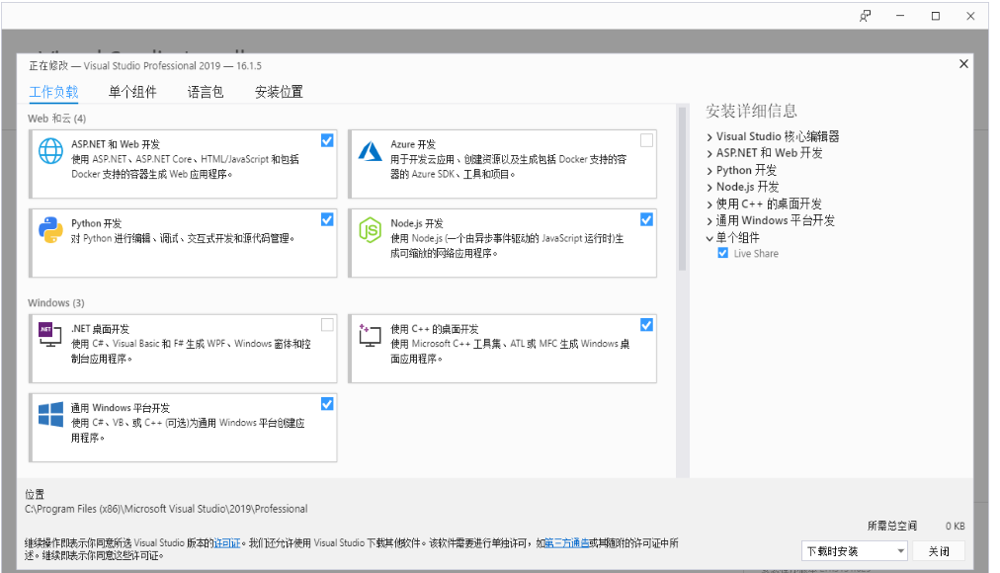
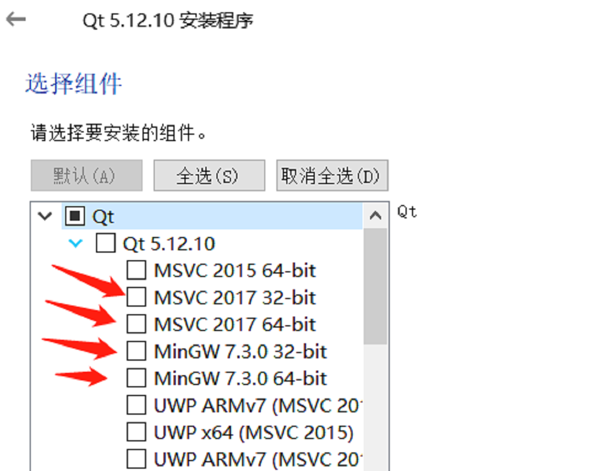

C++ 环境搭建
确认开发目标
MycobotCpp是一个和mycobot进行串口通讯的接口程序，调用的是我们公司自己开发的mycobot库，里面有简单的使用案例。如果您想通过c++进行自由开发，控制我们公司已经研发出来的机器人，那么它是您的选择。
支持的机械臂型号：myCobot 280-M5、myCobot 320-M5、myCobot Pro 450
运行MycobotCpp所需要的软件：vs2019、qt5.12.10、vsaddin（qt插件）。
Windows环境配置
安装vs2019
下载：
首先在官网下载vs2019。安装：
安装完成后，会出现下图所示界面，主要选择“通用Windows平台开发、使用C++的桌面开发、ASRNET和Web开发”这3个（此处只是建议，具体可根据自己的需求选择，vs2019安装时间较长）。
环境变量配置：
此电脑--》右键 属性--》高级系统设置--》环境变量--》看系统变量处，点击新建--》变量名：VCINSTALLDIR 变量值：找到Redist所在目录(如：D:\vs2019\VC），具体如下图所示：

安装qt5.12.10
下载：
下载qt5.12.10及以上版本都可以，具体操作如下图：

- 安装：
首先登录qt账号，没有就先注册。接下来会出现选择组件的界面，windows上选择MinGW和MSVC即可，具体如下图所示：
 环境变量配置：
此电脑--》右键 属性--》高级系统设置--》环境变量--》看系统变量处，点击新建--》变量名：QTDIR 变量值：msvc2017_64所在目录（如：D:\qt5.12.10\5.12.10\msvc2017_64，具体看自己电脑的安装路径），具体如下图所示：

安装qt插件vsaddin
下载：
首先选择对应vs2019的vsaddin版本,具体操作如下图：

- 安装：直接安装即可
- 配置：
vs2019菜单栏 扩展--》QT VS ToolS--》QT Versions--》add new qtversion Path选择msvc2017_64所在路径（如：D:\qt5.12.10\5.12.10\msvc2017_64），具体操作如下图所示：

Linux环境配置
安装qt5.12.10
下载：
下载地址和Windows一样，选择linux上的安装包即可，具体可看上面的8.1.2.2。安装：
命令行安装：运行./“安装包名称”，如果没有执行权限，加执行权限：sudo chmod +x “安装包名称”，然后进入图形界面，和Windows一样；
图形界面安装：和Windows一样。
建议直接普通用户权限安装qt，安装成功后可以执行qmake --version，出现如下界面安装成功：

配置：
打开配置文件，普通用户安装qt：vi ~/.bashrc，root用户安装qt：vi ~/.profile。在配置文件中添加：export QTDIR=“qt所在目录”（如：export QTDIR=$HOME/Qt/5.12.10/gcc_64），具体如下图所示：